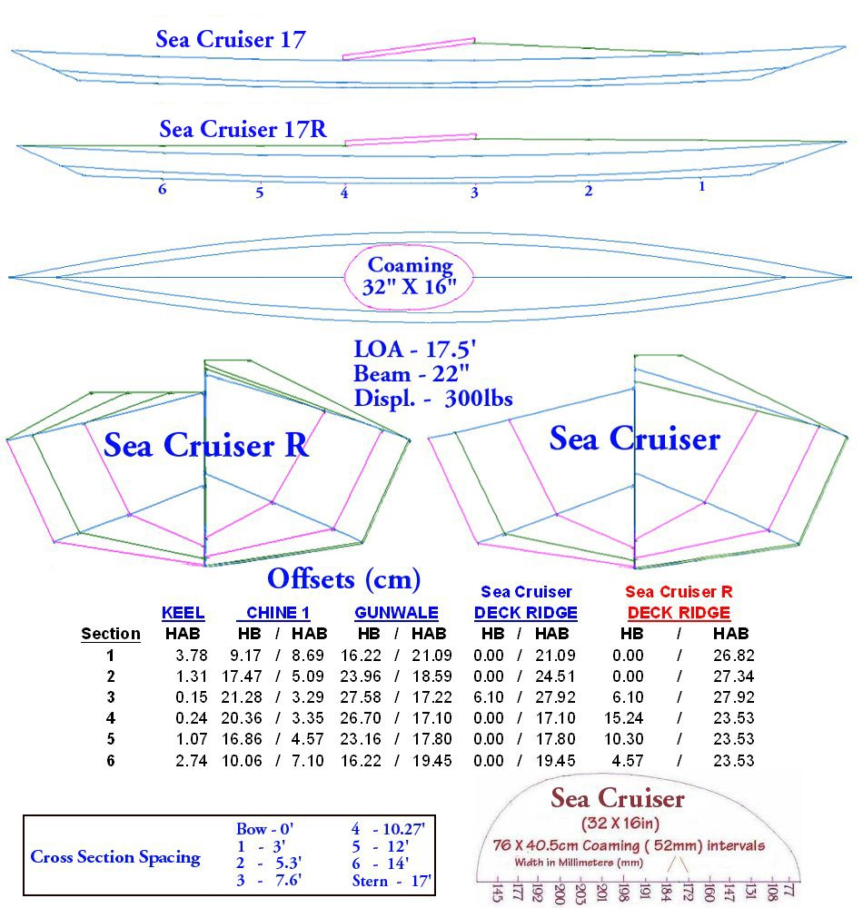

| Sea Cruiser 17 Offsets / Drawings ( New Dec 09 ) | Menu Last Page Next Page |
|
 The new Sea Cruiser 17 / Sea Cruiser 17R ( 14 Dec 09) were designed to replace the Original Sea Cruiser's. The new design has greater stability, and better overall handling. |
|